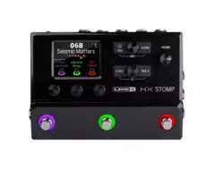

<!DOCTYPE html>
<html lang="en">
    <head>
        <meta charset="utf-8">
        <title>Dominique L. Johnson, Sr. Design Portfolio</title>
        <meta name="viewport" content="width=device-width, initial-scale=1">
        <meta name="author" content="Dominique L. Johnson, Sr.">
        <meta name="description" content="This is a technical document page. It was designed as a requirement for freecodecamp.com.">
        <meta name="theme-color" content="#000000">

        <link rel="shortcut icon" href="favicon.ico" type="image/x-icon">

        <style>
            *{
                box-sizing: content-box;
            }
            h1,h2,h3,h4,h5,h6{margin-bottom: 1rem;}
            h1, .h1{font-size: 2.5rem;}
            h2, .h2{font-size: 2rem;}
            h3, .h3{font-size: 1.75rem;}
            h4, .h4{font-size: 1.5rem;}
            h5, .h5{font-size: 1.25rem;}
            h6, .h6{font-size: 1rem;}
            p, li{
                line-height: 1.5rem;
            }
            body{
                margin: 0;
                padding: 0;
                background: url("img/bassist.webp") no-repeat center fixed;
                background-size: cover;
                color: white;
            }
            header{
                font-size: 1.5rem;
                font-weight: 600;
                text-shadow: 0.1rem 0.1rem 0.1rem black;
            }
            nav{
                position: fixed;
                padding: 0;
                width: 100%;
                background-color: black;
            }
            nav .flex-box{
                display: flex;
                margin: 0;
                padding: 1rem 0 0.7rem 0;
                justify-content: center;
                align-items: center;
            }
            nav img{
                width: 5.5rem;
                height: 1.2rem;
                margin: 0 1rem;
            }
            nav header{
                margin: 0 1rem;
                text-shadow: 0.13rem 0.13rem 0.1rem gray;
            }
            nav ul{
                list-style: none;
                margin: 0;
                padding: 0;
            }
            nav a{
                display: block;
                padding: 0.4rem 0 0.65rem 0;
                background-color: rgba(0, 0, 0, 0.7);
                /* border-radius: 0.3rem; */
                box-shadow: 0.1rem 0.1rem 0.15rem rgba(255, 255, 255, 0.3), -0.1rem -0.1rem 0.15rem rgba(255, 255, 255, 0.3);
                color: ghostwhite;
                text-align: center;
                text-decoration: none;
                font-weight: 700;
            }
            nav a:hover{
                text-decoration: none;
                background-color: rgba(255, 255, 255, 0.5);
                color: white;
                font-weight: 700;
                box-shadow: 0.1rem 0.1rem 0.1rem white, -0.1rem -0.1rem 0.1rem white;
            }
            main{
                padding: 15.5rem 1rem 0 1rem;
            }
            main img{
                float: right;
            }
            section{
                margin-bottom: 1rem;
                padding: 1rem;
                border-radius: 1rem;
                background-color: rgba(0, 0, 0, 0.1);
                box-shadow: 0.1rem 0.1rem 0.1rem rgba(0, 0, 0, 1), -0.1rem -0.1rem 1rem rgba(255, 255, 255, 0.1);
            }
            article ul{
                background-color: rgba(255, 255, 255, 0.1);
                border-radius: 0.5rem;
                padding: 0.5rem 0.5rem 0.5rem 1.75rem;
            }
            article li{
                margin: 0.6rem 0;
            }
            code{
                padding: 0.2rem;
                border-radius: 0.25rem;
                background-color: rgba(255, 255, 255, 0.5);
            }
            @media (min-width: 900px){
                nav{
                    padding: 1rem;
                    width: 19rem;
                    height: 100vh;
                    background-color: transparent;
                    border: 1rem solid darkslategray;

                }
                nav header{
                    text-shadow: 0.1rem 0.1rem 0.1rem black;
                }
                nav a{
                    margin: 1rem 0.5rem;
                    border-radius: 0.6rem;
                    background-color: rgba(0, 0, 0, 0.1);
                    box-shadow: 0.1rem 0.1rem 0.1rem rgba(0, 0, 0, 0.5), -0.1rem -0.1rem 1rem rgba(255, 255, 255, 0.1);
                }
                nav a:hover{
                    background-color: rgba(255, 255, 255, 0.1);
                    box-shadow: 0.1rem 0.1rem 0.1rem white, -0.1rem -0.1rem 0.1rem white;
                    text-shadow: 0.14rem 0.14rem 0.1rem black;
                }
                main{
                    padding: 5rem 2rem 0 23.5rem;
                    border: 1rem solid darkslategray;
                }
                article{
                    margin-left: 1rem;
                }
                article ul{
                    margin: 0.5rem;
                    padding: 1rem 0.5rem 1rem 2rem;
                }
            }
        </style>
    </head>
    <body>
        <nav>
            <div class="flex-box">
                
                <header>Snapshots</header>
            </div>
            <ul>
                <li><a href="#What_are_Snapshots?">What are Snapshots?</a></li>
                <li><a href="#Using_Snapshots">Using Snapshots</a></li>
                <li><a href="#Copying_and_Pasting_a_Snapshot">Copying and Pasting a Snapshot</a></li>
                <li><a href="#Swapping_Snapshots">Swapping Snapshots</a></li>
                <li><a href="#Saving_Snapshots">Saving Snapshots</a></li>
            </ul>
        </nav>
        <main>
            
            <section id="What_are_Snapshots?">
                <header>What are Snapshots?</header>
                <article>
                    <p>
                    Imagine you have eight pet octopuses, all slithering around your amp and pedalboard. Instead of tap-dancing on your pedals (and accidentally stepping on a tentacle), you shout "Okay, gang—here's the verse... now!" and your octopuses switch some pedals on, switch other pedals off, and   tweak all your amps and pedals' knobs to make the best  possible  settings  for  your  song's  verse,  all  seamlessly  with  spillover  delay  and  reverb trails. Then you shout "Ready for the chorus... now!" and your octopuses in-stantly tweak everything for your song's chorus. That's the power of snapshots.The  only  thing  your  octopuses/snapshots  can't  do  is  rearrange  your  pedalboard  or  swap out an effect or amp for a different one (unless both effect or amp blocks exist in the same preset).
                    </p>
                    <p>
                        Each preset can have up to 64 parameters assigned to Snapshots; hence, eight octo-puses with eight tentacles each. The octopuses can remember three separate groups of on/off statuses and setting tweaks per preset (say, for your verse, chorus, and over-indulgent noise segue); that is, HX Stomp has three snapshots per preset.
                    </p>
                    <p>
                        Each of the three snapshots in HX Stomp stores and recalls the state of certain ele-ments in the current preset, including:
                    </p>
                    <ul>
                        <li>
                            Effect Bypass — The bypass (on/off) state of all processing blocks (The bypass state of the 1 Switch Looper is not stored/recalled via snapshot)
                        </li>
                        <li>
                            Parameter  Control — The  values  of  any  parameters  assigned  to  controllers  (up to 64 per preset)
                        </li>
                        <li>
                            Tempo—The  current  system  tempo,  if  "Global  Settings  >  MIDI/Tempo"  >  Tempo Select is set to "Per Snapshot." (By default, it's set to "Per Preset")
                        </li>
                    </ul>
                    <p>
                        Depending on how you configure them, snapshots can act as three variations of the same tone, three drastically different tones, or any combination thereof—all within the same preset. In many cases, a single preset's snapshots may accommodate all the various tones required for a song.
                    </p>
                </article>
            </section>
            <section id="Using_Snapshots">
                <header>Using Snapshots</header>
                <article>
                        <p>
                            1. From  Play  view, press  <code>PAGE </code>   until  you  see  Snapshot  foot-switch mode: <code>123</code>
                        </p>
                        <p>
                            2. Press one of the three snapshot switches to select a different snapshot.
                        </p>
                        <p>
                            3. Adjust the preset by doing one or more of the following:
                        </p>
                        <ul>
                            <li>
                                Turn one or more effects on or off by pressing stomp mode footswitch-es or pressing the Upper Knob in "Edit View". Snapshots remember every block's on/off state.
                            </li>
                            <li>
                                To adjust a parameter AND have it automatically update per snapshot, press and turn the knob. Snapshots remember the values of up to 64 effects parameters. The parameter's value appears white, indicating a controller's as-signed to it—in this case, the Snapshots controller: <code>Harmony - Delay 37, Feedbk 35, Time, Mix 1/8</code>
                            </li>
                        </ul>
                </article>
            </section>
            <section id="Copying_and_Pasting_a_Snapshot">
                <header>Copying and Pasting a Snapshot</header>
                <article>
                    <p>
                        Instead of creating a new snapshot from scratch, you may want to copy an existing one to another snapshot location and tweak just a few things.
                    </p>
                    <p>
                        1. From Snapshot mode, while touch-holding the footswitch for the snapshot you want to copy, briefly touch and release the footswitch for the snapshot you want to overwrite.A dialog panel appears: <code>Copy Snap 1 to 2? - OK Cancel</code>
                    </p>
                    <p>
                        2. Press Knob 3 <code>OK</code>.
                    </p>

                </article>
            </section>
            <section id="Swapping_Snapshots">
                <header>Swapping Snapshots</header>
                <article>
                    <p>
                        1. From  Snapshot  mode,  simultaneously  touch-hold  the  two  footswitches for the snapshots you wish to swap until the following dialog appears: <code> Swap Snaps 1 and 2? OK Cancel</code>
                    </p>
                    <p>
                        2. Press Knob 3 <code>OK</code>.
                    </p>

                </article>
            </section>
            <section id="Saving_Snapshots">
                <header>Saving Snapshots</header>
                <article>
                    <p>
                        Press <code>HOME</code> and <code>ACTION</code> together twice to save the preset.
                    </p>
                    <p>
                        Saving a preset stores all of its 3 snapshots automatically.
                    </p>
                </article>
            </section>
        </main>
    </body>
</html>